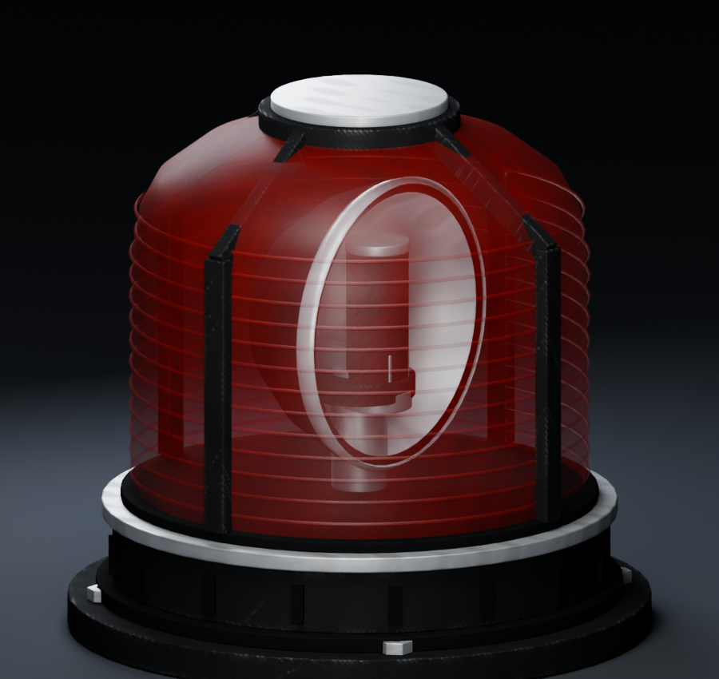
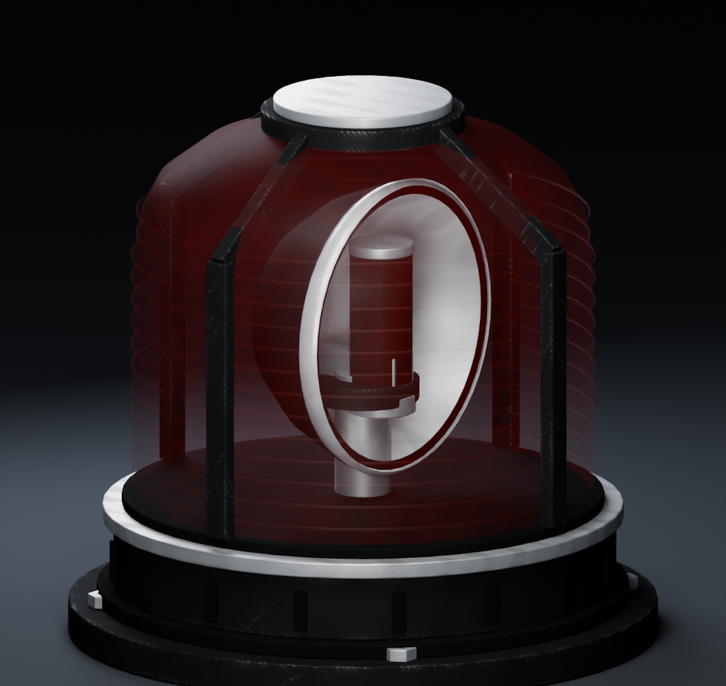
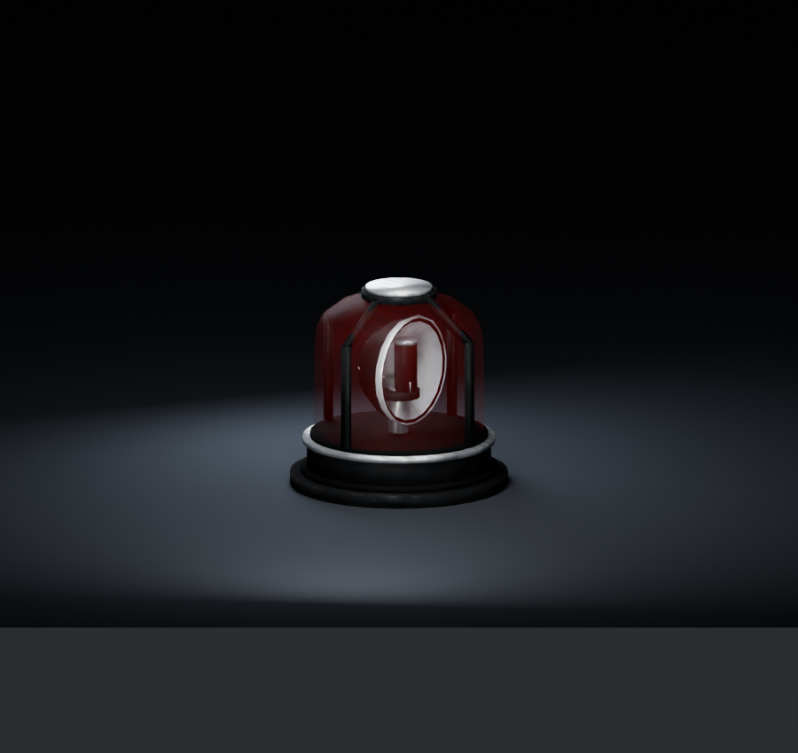
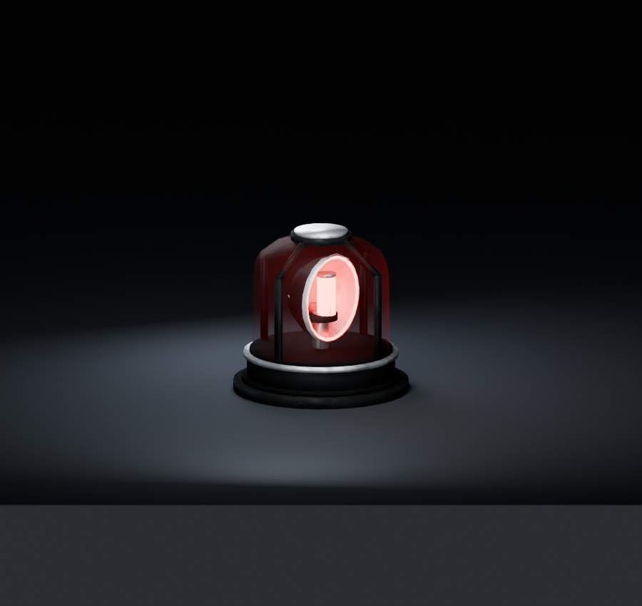
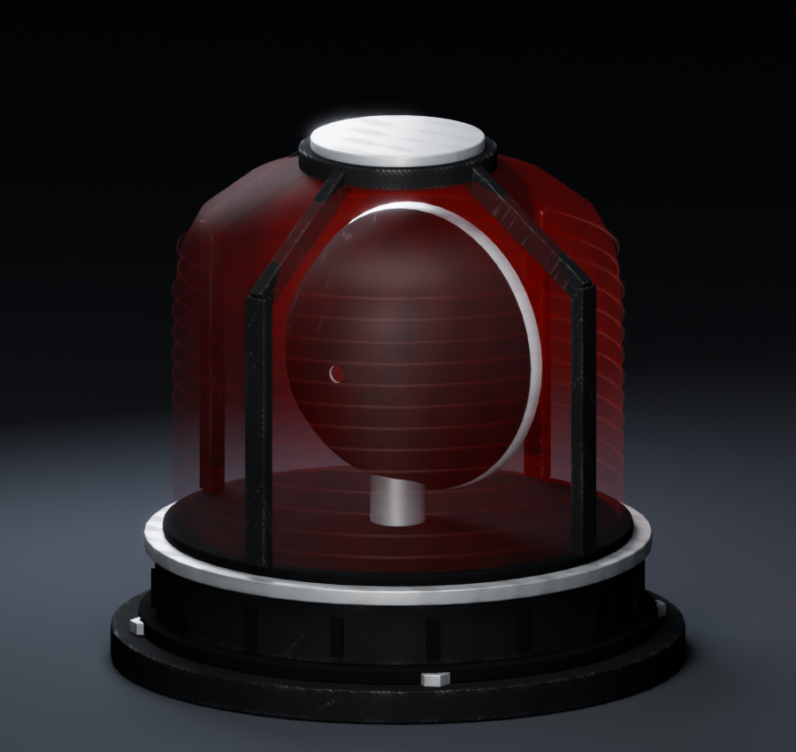

The cover retains its red tint and molded optical rings while exposing the bulb, reflector and motor hardware. Matched Blender renders use the unchanged exported BO3 models and maps. These show the material repair; the game's lighting, bloom and performance still require the user's playtest.
The left comparison reconstructs the old cover opacity using the repaired valid shader. It is an opacity comparison, not a screenshot or reconstruction of the game's old fallback material.





Open the native-model Blender preview. Saved with Rendered shading, scene lights and the unlit state; its timeline rotates the exported reflector.